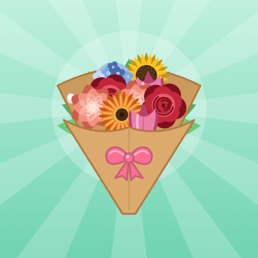
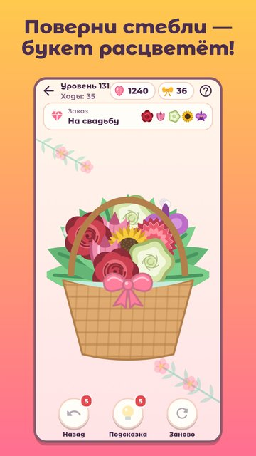

Флорист
Поверни стебли — и букет расцветёт!
Светлая цветочная лавка, где каждый букет собирается одним касанием. Поворачивай стебли, пока каждый цветок не дотянется до ленты: бутоны распустятся, а готовый букет завернётся в крафт с бантом.

- Простые правила: одно касание — один поворот.
- 12 цветов и заказы клиентов: на день рождения, на свидание, для мамы, на свадьбу.
- Портфолио флориста: 40 букетов с рецептами.
- Букет дня, задания и праздники: 14 февраля, 8 Марта, 1 сентября, Новый год.
- Подсказки и отмена хода — застрять нельзя.
- Играй без интернета, на русском и английском.